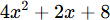
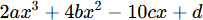
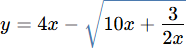
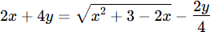
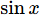
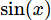
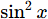
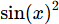
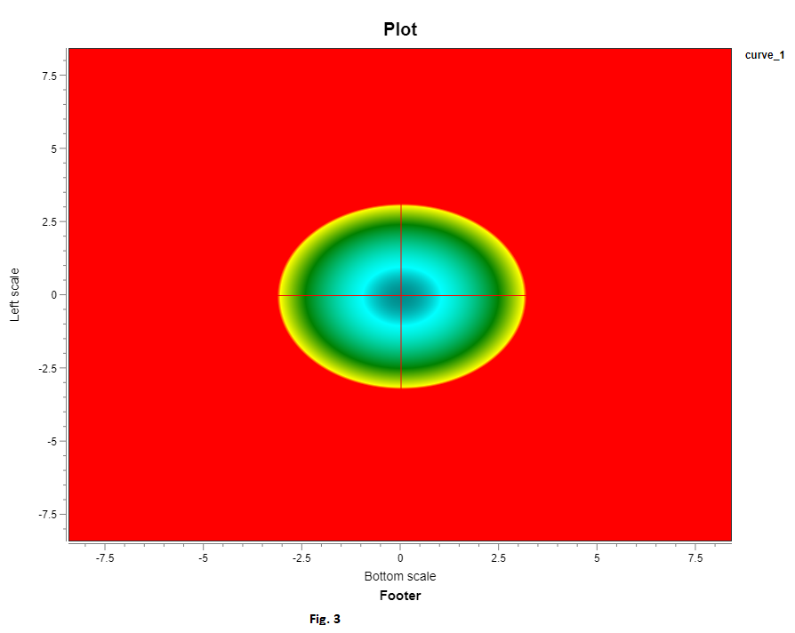
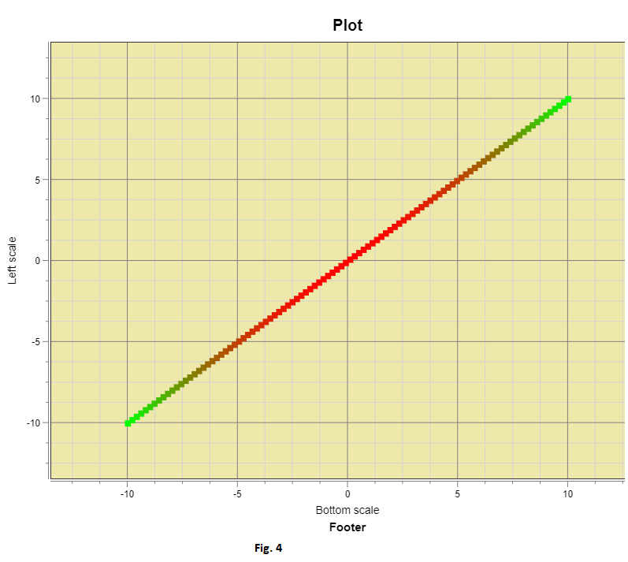

Plotting Functions
|
The Grapher allows plotting of 2D and 3D functions. Click Curve Settings button to launch the Curve Function dialog. In the dialog, set the various properties and click "Ok". Next click the Add Curve button to add a curve to the plot. Two D FunctionsIf the Three D checkbox in the Curve Function dialog is unchecked (Fig. 1), The Grapher tries to plot a Two D curve of the function. A 2D function may contain as many as five unknown coefficients. The "Function" field of the dialog, allows many different forms of inputs: polynomials -     trigs -  or   or  sin(x) cos(x) 4*sin(x) a*cos(x) Notes: For trigs, the product sign is required in some situations. If in doubt, always insert the product sign. When a trig keyword is part of the function, the values in the limit fields are interpreted as radians. To force the dialog to interpret the limits as degrees, follow variables by the "deg" keyword. For example, sin(x deg) in the Function field will cause limits to be interpreted as degrees. logs - 2.5*log10(x), log9(x), ...log2(x) For logs, the product sign is required in some situations. If in doubt, always insert the product sign. Notes: Logs are evaluated according to base. Base 2 through 10 is allowed. log2 is for base 2, log3is for base 3, etc. Use ln or log (without the number suffix) for natural logarithm. constants - e, pi Notes: The "Lower limit" and "Upper limit" fields accept numbers or expressions that evaluates to numbers. The expressions may contain Grapher constants such as e and PI or user defined constants. If variables other than x (for 2D) or x and y (for 3D) or the Grapher is unable to determine variable(s), the "Enter variable" field is displayed. you must enter a valid variable. Valid variables are any alpha character other than 'e'. 'e' is a mathematical constant that is the base of the natural logarithm. The "Number of points" field can hold a value 2 or greater. Too high a value leads to longer processing time. Too small a value leads to curves that are not very smooth. The default of 100 is adequate for most user cases. If periodic curves with many cycles are not drawn as expected, it is usually due to too small a value for "Number of points". If the "Unbounded range" field is checked, the limits are disregarded. If the plot is panned, the curve is redrawn to the new limits created by panning. Theoretically, the limits are infinite. In the "Unbounded range" mode, curve points are computed on the fly but are not cached. Thus, point dependent operations are not possible in this mode. In particular, ruler operations and shading of watch area will not work. Three D FunctionsIf the Three D checkbox in the Curve Function dialog is checked (Fig. 2), The Grapher tries to plot a Three D curve of the function. You set the Type field of the dialog to instruct Grapher to plot either a Spectrocurve or Spectrogram. Fig. 3 and Fig. 4 show a Spectrogram and Spectrocurve, respectively, of the function x^2+y^2. |
Fig. 1 Fig. 2   |
|
|
|
Created with the Personal Edition of HelpNDoc: Free iPhone documentation generator